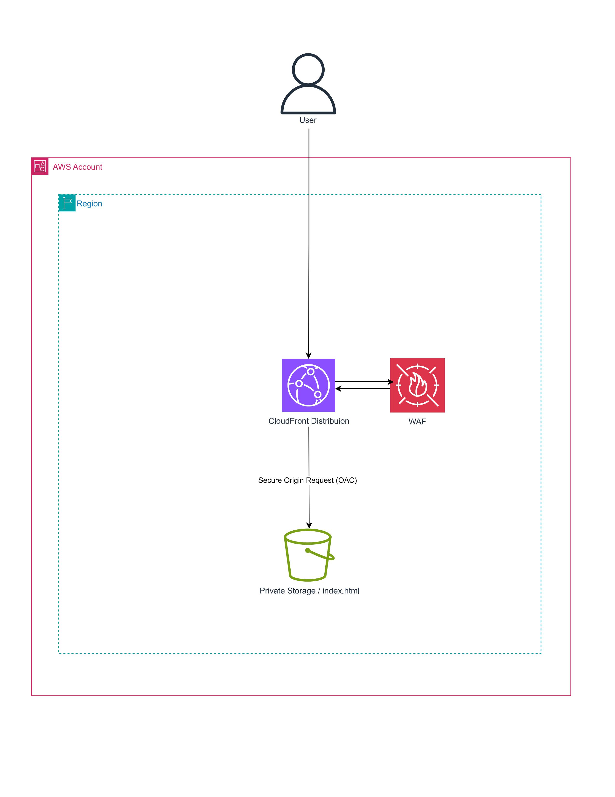
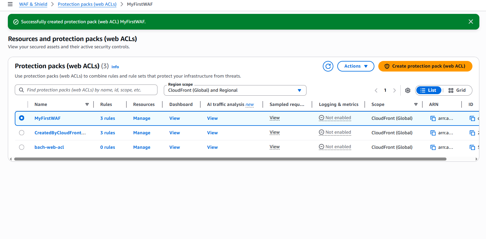
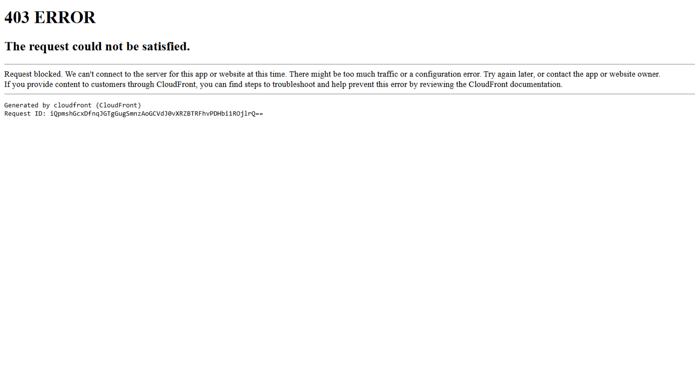

Filtering Traffic & Securing My Site
After getting my site up with S3 and CloudFront, I wanted to add some security. That’s where AWS WAF comes in. It acts like a filter in front of your site and blocks unwanted traffic before it ever reaches your content.
In this project, I set up a Web ACL, added managed rules, and attached it to my CloudFront distribution.
At a high level, my setup now looks like this:

Instead of requests going directly to my site, they now pass through AWS WAF first.
I started by navigating to:
AWS Console → WAF & Shield → Web ACLs → Create Web ACL
Configuration:
One important note: CloudFront WAFs are global, so make sure you're not configuring a regional WAF.
This is where the filtering actually happens.
Under Choose initial protections, AWS gives three options: Recommended, Essentials, and You build it.
I chose You build it so I could better understand what’s happening under the hood.
Steps:
These provide built-in protection against things like:
It’s basically plug-and-play security.
To make sure everything worked, I created a simple test rule:
If everything is configured correctly, I should block myself.
For the default action:
Then I created the Web ACL.

Next, I connected the WAF to my CloudFront distribution:
Now WAF sits in front of my site and filters incoming requests.
Note: If a WAF is already attached, you’ll need to remove it first.
Since I blocked my own IP, I tested by visiting my CloudFront URL.
I got an Access Denied page, which confirmed everything was working.

To see what’s happening behind the scenes:
This shows:
It’s very helpful for debugging and understanding traffic patterns.
WAF was much easier to set up than I expected.
Instead of manually writing complex security rules, AWS provides managed rule sets that can be quickly attached for immediate protection.
This makes it a great way to add a security layer to any CloudFront-based application.